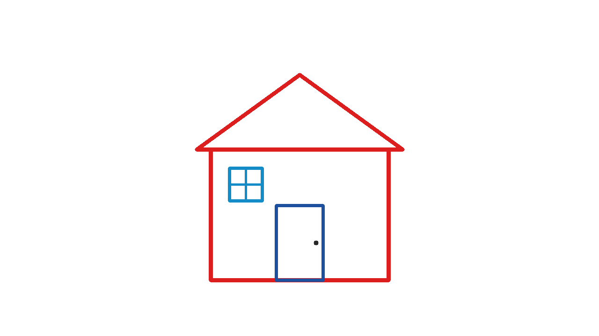
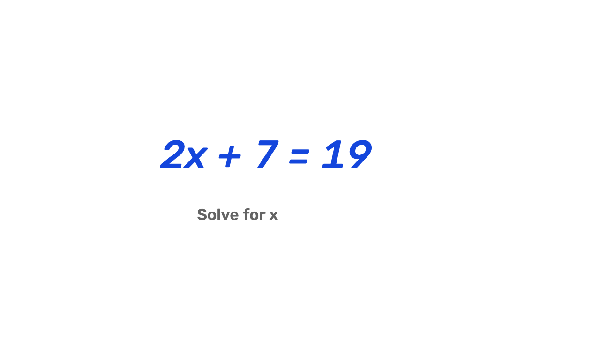

A whiteboard you draw
in the air
An AI assisted university project

Sample board
Sketch a math idea or diagram while explaining it to someone.
Use a laptop webcam for a quick visual explanation.
A drawing tablet is optional.
| Gesture | Action |
|---|---|
| Index finger up | Draw |
| Index and middle fingers up | Erase |
| Open hand | Hover |
| Fist held for one second | Clear the board |
w switches the view. s saves a PNG. q exits.
0301
Webcam
MediaPipe tracks 21 hand landmarks.
02
Gesture
Finger positions choose a drawing mode.
03
Smoothing
EMA blends the current and previous position.
04
Canvas
OpenCV overlays strokes or shows a white board.
Alpha 1.0 follows raw points. Alpha 0.5 blends them equally.
04Multiple pages with automatic saving
Local recognition with Apple Vision
Editable words and PDF export
b: notebook, n: new page, t: recognize, e: edit, f: PDF
Handwriting recognition still needs a real writing trial.
Created the first implementation and draft materials.
Reviewed the code, reproduced bugs, and helped repair them.
Claude has a planned architecture review role.
The project log records only confirmed contributions.
Press a to send the board to both providers in parallel.
Missing keys and errors stay visible.
Demo mode makes no AI request.

Sample input board
Live model quality has not been measured.
06Gesture state transitions
PNG export and stroke color
AI failures and comparison logic
Concurrent provider dispatch
Real camera accuracy
Lighting and distance behavior
Live AI answer quality
Demo performance on the classroom laptop
Synthetic tests support debugging. Field trials support performance claims.
07Draw a short equation or house
Hover, erase, and clear
Switch views and save
Review a notebook page
Record real gesture trials.
Compare smoothing on the same motion.
Grade full AI replies.
Mouse mode is available if the webcam cannot start.
08